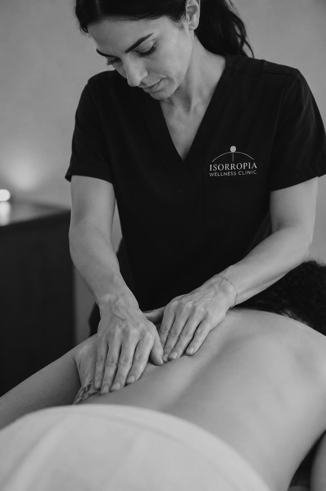
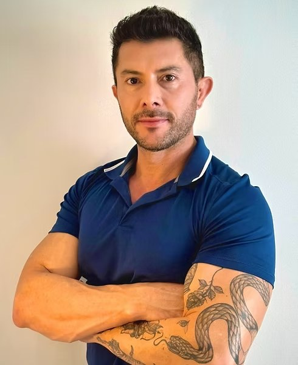
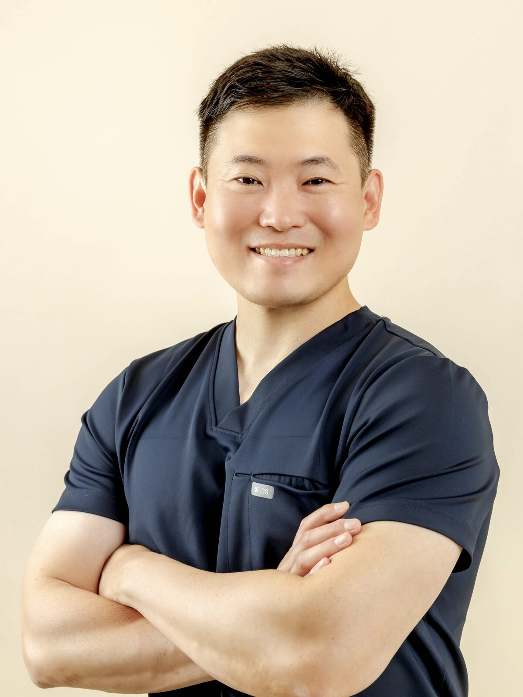

Massage
Therapy.
Restore movement. Reduce pain. Improve function. Tailored to you, every time.

Care for the body
in full.
Massage therapy is a clinical, hands-on health profession focused on improving how your body moves and feels. Registered Massage Therapists (RMTs) use orthopedic assessment, manual therapy, and targeted treatment techniques to address pain, tension, and dysfunction in muscles, joints, and soft tissues.
- —Myofascial release
- —Deep tissue therapy
- —Trigger point therapy
- —Joint mobilizations
- —Swedish relaxation & prenatal massage
- —Post-injury rehabilitation
How Massage Therapy Helps You Reach Your Goals
Massage therapy supports the promotion, maintenance, and restoration of your physical health. Through skilled assessment and targeted manual techniques, RMTs help you achieve meaningful improvements in movement, comfort, and overall function.
Restore movement
Enhancing mobility, flexibility, and joint mechanics so your body moves with greater ease and confidence.
Reduce pain
Relieving discomfort related to injury, stress, overuse, or chronic musculoskeletal conditions.
Improve function
Supporting better strength, stability, and everyday performance by addressing soft-tissue and joint dysfunction.
Promote physical health
Improving circulation, tissue quality, and relaxation to enhance overall wellness.
Maintain physical health
Helping you stay active, balanced, and resilient by supporting ongoing joint and soft-tissue health.
How Your RMTs Deliver These Benefits
Orthopedic assessment — to identify the source of pain or dysfunction
Manual therapy — including soft-tissue manipulation, mobilization, and stretching
Targeted treatment — designed to address specific musculoskeletal issues
Home care guidance — to support long-term recovery and wellness
Common Conditions Massage Therapy Can Help With
Massage therapy supports the promotion, maintenance, and restoration of physical health by addressing a wide range of musculoskeletal conditions. RMTs use orthopedic assessment and targeted manual techniques to reduce pain, restore movement, and improve function in conditions such as:
Muscle strains & sprains — Soft-tissue injuries from sports, work, or daily activities.
Back pain — Including mechanical low-back pain, tension, and postural strain.
Neck pain — Often related to stress, posture, or repetitive use.
Shoulder dysfunction — Rotator cuff issues, mobility restrictions, and soft-tissue tension.
Headaches — Particularly tension-type headaches linked to muscular tightness.
TMJD — Addressing jaw pain, muscle tension, and restricted movement associated with TMJ disorders.
Pregnancy-related discomfort — Supporting mobility and relieving low-back, hip, and pelvic discomfort.
Postural strain — Pain or fatigue from prolonged sitting, standing, or repetitive tasks.
Sciatica-related discomfort — Soft-tissue tension contributing to radiating leg pain.
Sports injuries — Overuse injuries, muscle tightness, and recovery support.
Arthritis-related stiffness — Improving mobility and reducing soft-tissue tension around affected joints.
Whiplash-associated disorders — Soft-tissue rehabilitation following motor-vehicle accidents.
Repetitive strain injuries — Such as tendonitis or occupational overuse.
General muscle tension — Stress-related tightness and discomfort.
Your first visit,
step by step.
Intake & intake form
Before your session you'll complete a brief intake form covering your health history, current concerns, and goals. This lets your RMT arrive prepared.
Assessment
Your RMT will discuss your intake form, ask follow-up questions, and assess posture and range of motion where relevant to build a clear picture of what your body needs.
Treatment
Your treatment is tailored specifically to you — technique, pressure, and focus areas are all discussed and adjusted based on your feedback throughout the session.
After care
Your RMT will share home-care recommendations and, where appropriate, a suggested treatment frequency to support your recovery between sessions.
The RMTs at
Isorropia.
Each practitioner brings their own strengths to the treatment room. All are registered with the CMTBC and committed to continued learning.
Liza Pinili
Registered Massage Therapist
Specialising in orthopedic sprains and strains, repetitive strain, post-surgical rehab, and MVA recovery. Modalities include Swedish, myofascial release, trigger point therapy, PNF, and joint mobilization.
Reserve with LizaMelanie Gunther
Registered Massage Therapist
An integrative practitioner and Registered Holistic Nutritionist blending hands-on and tool-assisted techniques for whole-body balance, tension relief, and improved range of motion.
Reserve with MelanieJerry Ju
Registered Massage Therapist
A calm, grounded therapist focusing on sports injuries, stress and anxiety, and post-surgery rehab using Swedish massage, deep tissue, and lymphatic drainage.
Reserve with JerryCayley Malo
Registered Massage Therapist
3,200 hours of training and broad expertise spanning repetitive strain, postural imbalances, sports injuries, back and neck pain, and neurological concerns.
Reserve with Cayley
Jose Chacara Sanchez
Registered Massage Therapist
Specialising in lower back, shoulder, and knee pain and chronic conditions including MS, fibromyalgia, carpal tunnel, and frozen shoulder — grounded in anatomy and research.
Reserve with JoseSummer Lee
Registered Massage Therapist
A Gerontology graduate and RMT offering Swedish massage, trigger point release, myofascial release, and PNF for thoughtful, patient-centred care across all stages of life.
Reserve with Summer
Joshua Kim
Registered Massage Therapist
BSc Life Science (UBC), honours RMT graduate. Deep tissue massage, myofascial release, fascial stretch therapy, and joint care for chronic pain, injury recovery, and tension.
Reserve with JoshuaReady to book?
Book online in minutes. First visits are 60 minutes — enough time for a proper assessment and a full treatment. Direct billing available through most extended health plans.